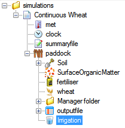

Irrigation
Setting Up Irrigation
- This exercise will show you how to get started with irrigation. Start by creating a new simulation using Continuous Wheat as a base. Save the file.
- Change the start date of the simulation to 1/01/1950 to run a single year.
- Change Initial Water in the Soil component to 50% full, evenly distributed.
- Change Reporting Frequency in outputfile to 'end_day'.
- Add the irrigation component to your paddock. You will find it in the standard toolbox under Water Components. NB: make sure you use Irrigation, not Irrigation ML allocation.

- By default, Irrigation will automatically irrigate back to DUL. Since we're going to control it via scripts, turn off automatic irrigation.
- Run the simulation.
Using Irrigation Scripts
- A number of pre defined management scripts are available to cover a range of irrigation scenarios. Let's look at the effect irrigation has on soil water content. Click the Checkpoint button to save the current state of the simulation.
- Drag an 'Irrigate on date' script from the Management toolbox into the Manager folder. You'll find it under Manager.NET (common tasks).
- Enter the following dates: 01-mar 01-aug 01-nov
- Change 'Amount of irrigation to apply' to 100.
- Run the simulation.
- Create a graph of Date vs esw. Note how the soil water content jumps as irrigation is applied.
Application of irrigation is not listed in the summary file. To check that irrigation is being applied correctly, add the 'irrigation' variable to your outputfile.
As has been mentioned, a number of scripts to assist with applying irrigation have been provided as part of APSIM. While this covers many common scenarios, there will invaribly be times when you want to apply irrigation in a manner that the scripts do not provide for. In these cases you can use the provided scripts as a base and extend them to cover your own situation. Try extending the 'Irrigate on event' rule to irrigate 5 days after the event occurs. You will need experience in C# programming to do this.